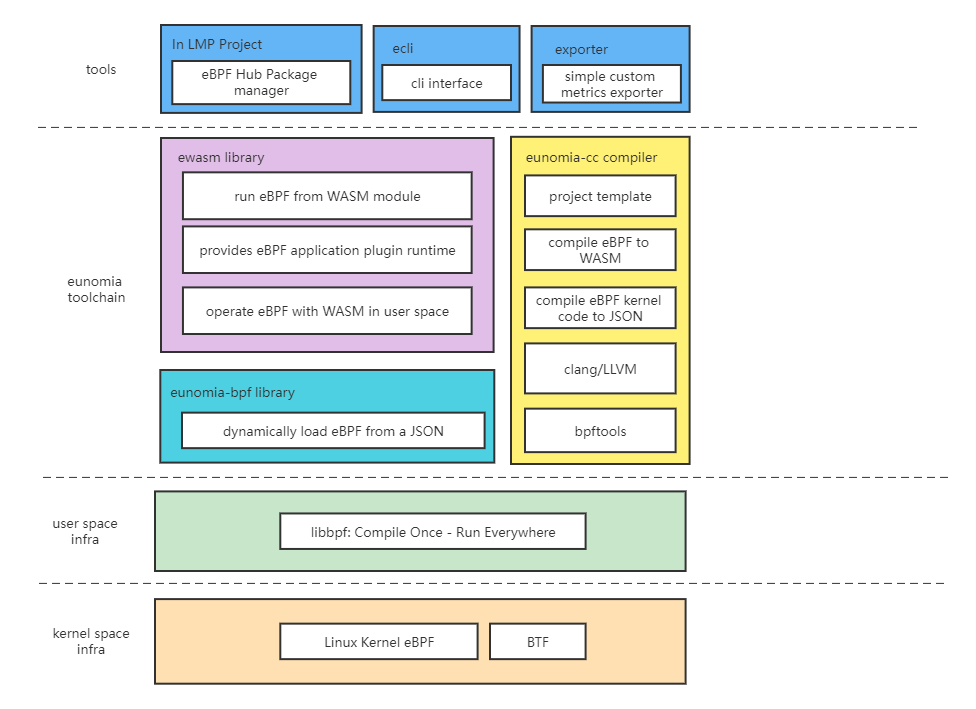
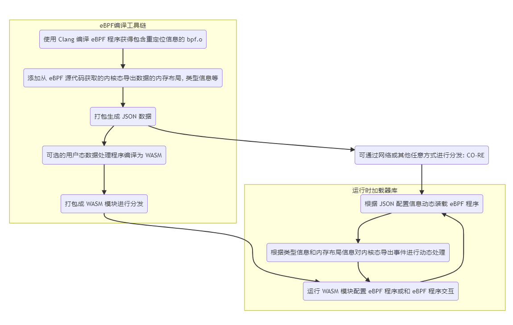

eunomia-bpf 用戶手冊: 讓 eBPF 程序的開發和部署儘可能簡單
傳統來說， eBPF 的開發方式主要有 BCC、libbpf 等方式。要完成一個 BPF 二進制程序的開發，需要搭建開發編譯環境，要關注目標系統的內核版本情況，需要掌握從 BPF 內核態到用戶態程序的編寫，以及如何加載、綁定至對應的 HOOK 點等待事件觸發，最後再對輸出的日誌及數據進行處理。
我們希望有這樣一種 eBPF 的編譯和運行工具鏈，就像其他很多語言一樣：
-
大多數用戶只需要關注
bpf.c程序本身的編寫，不需要寫任何其他的什麼 Python, Clang 之類的用戶態輔助代碼框架； 這樣我們可以很方便地分發、重用 eBPF 程序本身，而不需要和某種或幾種語言的生態綁定； -
最大程度上和主流的 libbpf 框架實現兼容，原先使用 libbpf 框架編寫的代碼幾乎不需要改動即可移植；eunomia-bpf 編寫的 eBPF 程序也可以使用 libbpf 框架來直接編譯運行；
-
本地只需要下載一個很小的二進制運行時，沒有任何的 Clang LLVM 之類的大型依賴，可以支持熱插拔、熱更新； 也可以作為 Lua 虛擬機那樣的小模塊直接編譯嵌入其他的大型軟件中，提供 eBPF 程序本身的服務；運行和啟動時資源佔用率都很低；
-
讓 eBPF 程序的分發和使用像網頁和 Web 服務一樣自然（Make eBPF as a service）： 支持在集群環境中直接通過一次請求進行分發和熱更新，僅需數十 kB 的 payload， <100ms 的更新時間，和少量的 CPU 內存佔用即可完成 eBPF 程序的分發、部署和更新； 不需要執行額外的編譯過程，就能得到 CO-RE 的運行效率；
從 C 語言 的 Hello World 開始
還記得您第一次寫 C 語言 的 Hello World 程序 嗎？首先，我們需要一個 .c 文件，它包含一個 main 函數：
我們叫它 hello.c，接下來就只需要這幾個步驟就好：
# if you are using Ubuntu without a c compiler
sudo apt insalll build-essentials
# compile the program
gcc -o hello hello.c
# run the program
./hello
只需要寫一個 c 文件，執行兩行命令就可以運行；大多數情況下你也可以把編譯好的可執行文件直接移動到其他同樣架構的機器或不同版本的操作系統上，然後運行它，也會得到一樣的結果:
eunomia-bpf 的 Hello World
首先，我們需要一個 bpf.c 文件，它就是正常的、合法的 C 語言代碼，和 libbpf 所使用的完全相同：
#include <linux/bpf.h>
#include <bpf/bpf_helpers.h>
#include <bpf/bpf_tracing.h>
typedef int pid_t;
char LICENSE[] SEC("license") = "Dual BSD/GPL";
SEC("tp/syscalls/sys_enter_write")
int handle_tp(void *ctx)
{
pid_t pid = bpf_get_current_pid_tgid() >> 32;
bpf_printk("BPF triggered from PID %d.\n", pid);
return 0;
}
假設它叫 hello.bpf.c，新建一個 /path/to/repo 的文件夾並且把它放進去，接下來的步驟：
# 下載安裝 ecli 二進制
wget https://aka.pw/bpf-ecli -O /usr/local/ecli && chmod +x /usr/local/ecli
# 使用容器進行編譯，生成一個 package.json 文件，裡面是已經編譯好的代碼和一些輔助信息
docker run -it -v /path/to/repo:/src ghcr.io/eunomia-bpf/ecc-`uname -m`:latest
# 運行 eBPF 程序（root shell）
sudo ecli run package.json
使用 docker 的時候需要把包含 .bpf.c 文件的目錄掛載到容器的 /src 目錄下，目錄中只有一個 .bpf.c 文件；
它會追蹤所有進行 write 系統調用的進程的 pid：
$ sudo cat /sys/kernel/debug/tracing/trace_pipe
cat-42755 [003] d...1 48755.529860: bpf_trace_printk: BPF triggered from PID 42755.
cat-42755 [003] d...1 48755.529874: bpf_trace_printk: BPF triggered from PID 42755.
我們編譯好的 eBPF 代碼同樣可以適配多種內核版本，可以直接把 package.json 複製到另外一個機器上，然後不需要重新編譯就可以直接運行（CO-RE：Compile Once Run Every Where）；也可以通過網絡傳輸和分發 package.json，通常情況下，壓縮後的版本只有幾 kb 到幾十 kb。
添加 map 記錄數據
參考：https://github.com/eunomia-bpf/eunomia-bpf/tree/master/examples/bpftools/bootstrap
struct {
__uint(type, BPF_MAP_TYPE_HASH);
__uint(max_entries, 8192);
__type(key, pid_t);
__type(value, u64);
} exec_start SEC(".maps");
添加 map 的功能和 libbpf 沒有任何區別，只需要在 .bpf.c 中定義即可。
使用 ring buffer 往用戶態發送數據
參考：https://github.com/eunomia-bpf/eunomia-bpf/tree/master/examples/bpftools/bootstrap
只需要定義一個頭文件，包含你想要發送給用戶態的數據格式，以 .h 作為後綴名：
/* SPDX-License-Identifier: (LGPL-2.1 OR BSD-2-Clause) */
/* Copyright (c) 2020 Facebook */
#ifndef __BOOTSTRAP_H
#define __BOOTSTRAP_H
#define TASK_COMM_LEN 16
#define MAX_FILENAME_LEN 127
struct event {
int pid;
int ppid;
unsigned exit_code;
unsigned long long duration_ns;
char comm[TASK_COMM_LEN];
char filename[MAX_FILENAME_LEN];
unsigned char exit_event;
};
#endif /* __BOOTSTRAP_H */
在代碼中定義環形緩衝區之後，就可以直接使用它：
struct {
__uint(type, BPF_MAP_TYPE_RINGBUF);
__uint(max_entries, 256 * 1024);
} rb SEC(".maps");
SEC("tp/sched/sched_process_exec")
int handle_exec(struct trace_event_raw_sched_process_exec *ctx)
{
......
e->exit_event = false;
e->pid = pid;
e->ppid = BPF_CORE_READ(task, real_parent, tgid);
bpf_get_current_comm(&e->comm, sizeof(e->comm));
/* successfully submit it to user-space for post-processing */
bpf_ringbuf_submit(e, 0);
return 0;
}
eunomia-bpf 會自動去源代碼中找到對應的 ring buffer map，並且把 ring buffer 和類型信息記錄在編譯好的信息中，並在運行的時候自動完成對於 ring buffer 的加載、導出事件等工作。所有的 eBPF 代碼和原生的 libbpf 程序沒有任何區別，使用 eunomia-bpf 開發的代碼也可以在 libbpf 中無需任何改動即可編譯運行。
使用 perf event array 往用戶態發送數據
使用 perf event 的原理和使用 ring buffer 非常類似，使用我們的框架時，也只需要在頭文件中定義好所需導出的事件，然後定義一下 perf event map：
struct {
__uint(type, BPF_MAP_TYPE_PERF_EVENT_ARRAY);
__uint(key_size, sizeof(u32));
__uint(value_size, sizeof(u32));
} events SEC(".maps");
可以參考：https://github.com/eunomia-bpf/eunomia-bpf/tree/master/examples/bpftools/opensnoop 它是直接從 libbpf-tools 中移植的實現；
使用 github-template 實現遠程編譯
由於 eunomia-bpf 的編譯和運行階段完全分離，可以實現在 github 網頁上編輯之後，通過 github actions 來完成編譯，之後在本地一行命令即可啟動：
- 將此 github.com/eunomia-bpf/ebpm-template 用作 github 模板：請參閱 creating-a-repository-from-a-template
- 修改 bootstrap.bpf.c， commit 並等待工作流停止
- 我們配置了 github pages 來完成編譯好的 json 的導出，之後就可以實現 ecli 使用遠程 url 一行命令即可運行：
通過 API 進行熱插拔和分發
由於 eunomia-cc 編譯出來的 ebpf 程序代碼和附加信息很小（約數十 kb），且不需要同時傳遞任何的額外依賴，因此我們可以非常方便地通過網絡 API 直接進行分發，也可以在很短的時間（大約 100ms）內實現熱插拔和熱更新。我們提供了一個簡單的 client 和 server，請參考;
之前也有一篇比賽項目的可行性驗證的文章：
https://zhuanlan.zhihu.com/p/555362934
使用 Prometheus 或 OpenTelemetry 進行可觀測性數據收集
基於 async Rust 的 Prometheus 或 OpenTelemetry 自定義可觀測性數據收集器: eunomia-exporter
可以自行編譯或通過 release 下載
example
這是一個 opensnoop 程序，追蹤所有的打開文件，源代碼來自 bcc/libbpf-tools, 我們修改過後的源代碼在這裡: examples/bpftools/opensnoop
在編譯之後，可以定義一個這樣的配置文件:
programs:
- name: opensnoop
metrics:
counters:
- name: eunomia_file_open_counter
description: test
labels:
- name: pid
- name: comm
- name: filename
from: fname
compiled_ebpf_filename: examples/bpftools/opensnoop/package.json
然後，您可以在任何地方使用 config.yaml 和預編譯的 eBPF 數據 package.json 啟動 Prometheus 導出器，您可以看到如下指標：
您可以在任何內核版本上部署導出器，而無需依賴 LLVM/Clang。 有關詳細信息，請參閱 eunomia-exporter。
使用 Wasm 模塊分發、動態加載 eBPF 程序
藉助 Wasm-bpf 編譯工具鏈和運行時，我們可以使用 Wasm 將 eBPF 程序編寫為跨平臺的模塊，同時使用 C/C++ 或 Rust 來編寫 Wasm 程序。通過在 WebAssembly 中使用 eBPF 程序，我們不僅能讓 Wasm 應用享受到 eBPF 的高性能和對系統接口的訪問能力，還可以讓 eBPF 程序使用到 Wasm 的沙箱、靈活性、跨平臺性、和動態加載，並且使用 Wasm 的 OCI 鏡像來方便、快捷地分發和管理 eBPF 程序。結合這兩種技術，我們將會給 eBPF 和 Wasm 生態來一個全新的開發體驗！
Wasm-bpf 是一個新的開源項目：https://github.com/eunomia-bpf/wasm-bpf。它定義了一套 eBPF 相關係統接口的抽象，並提供了一套對應的開發工具鏈、庫以及通用的 Wasm + eBPF 運行時實例。它可以提供和 libbpf-bootstrap 相似的開發體驗，自動生成對應的 skeleton 頭文件，以及用於在 Wasm 和 eBPF 之間無序列化通信的數據結構定義。你可以非常容易地使用任何語言，在任何平臺上建立你自己的 Wasm-eBPF 運行時，使用相同的工具鏈來構建應用。更詳細的介紹，請參考我們的上一篇博客：Wasm-bpf: 架起 Webassembly 和 eBPF 內核可編程的橋樑。
基於 Wasm，我們可以使用多種語言構建 eBPF 應用，並以統一、輕量級的方式管理和發佈。以我們構建的示例應用 bootstrap.wasm 為例，大小僅為 ~90K，很容易通過網絡分發，並可以在不到 100ms 的時間內在另一臺機器上動態部署、加載和運行，並且保留輕量級容器的隔離特性。運行時不需要內核頭文件、LLVM、clang 等依賴，也不需要做任何消耗資源的重量級的編譯工作。
本文將以 C/C++ 語言為例，討論 C/C++ 編寫 eBPF 程序並編譯為 Wasm 模塊。使用 Rust 語言編寫 eBPF 程序並編譯為 Wasm 模塊的具體示例，將在下一篇文章中描述。
我們在倉庫中提供了幾個示例程序，分別對應於可觀測、網絡、安全等多種場景。
使用 Wasm 開發和打包 eBPF 程序
libbpf 是一個 C/C++ 的 eBPF 用戶態加載和控制庫，隨著內核一起分發，幾乎已經成為 eBPF 用戶態事實上的 API 標準，libbpf 也支持 CO-RE(Compile Once – Run Everywhere) 的解決方案，即預編譯的 bpf 代碼可以在不同內核版本上正常工作，而無需為每個特定內核重新編譯。我們希望儘可能的保持與 libbpf 的用戶態 API 以及行為一致，儘可能減少應用遷移到 Wasm （如果需要的話）的成本。
libbpf-bootstrap 為生成基於 libbpf 的 bpf 程序提供了模板,開發者可以很方便的使用該模板生成自定義的 bpf 程序。一般說來，在非 Wasm 沙箱的用戶態空間，使用 libbpf-bootstrap 腳手架，可以快速、輕鬆地使用 C/C++構建 BPF 應用程序。
編譯、構建和運行 eBPF 程序（無論是採用什麼語言），通常包含以下幾個步驟：
- 編寫內核態 eBPF 程序的代碼，一般使用 C/C++ 或 Rust 語言
- 使用 clang 編譯器或者相關工具鏈編譯 eBPF 程序（要實現跨內核版本移植的話，需要包含 BTF 信息）。
- 在用戶態的開發程序中，編寫對應的加載、控制、掛載、數據處理邏輯；
- 在實際運行的階段，從用戶態將 eBPF 程序加載進入內核，並實際執行。
bootstrap
bootstrap是一個簡單（但實用）的BPF應用程序的例子。它跟蹤進程的啟動（準確地說，是 exec() 系列的系統調用）和退出，併發送關於文件名、PID 和 父 PID 的數據，以及退出狀態和進程的持續時間。用-d <min-duration-ms> 你可以指定要記錄的進程的最小持續時間。
bootstrap 是在 libbpf-bootstrap 中，根據 BCC 軟件包中的libbpf-tools的類似思想創建的，但它被設計成更獨立的，並且有更簡單的 Makefile 以簡化用戶的特殊需求。它演示了典型的BPF特性，包含使用多個 BPF 程序段進行合作，使用 BPF map 來維護狀態，使用 BPF ring buffer 來發送數據到用戶空間，以及使用全局變量來參數化應用程序行為。
以下是我們使用 Wasm 編譯運行 bootstrap 的一個輸出示例：
$ sudo sudo ./wasm-bpf bootstrap.wasm -h
BPF bootstrap demo application.
It traces process start and exits and shows associated
information (filename, process duration, PID and PPID, etc).
USAGE: ./bootstrap [-d <min-duration-ms>] -v
$ sudo ./wasm-bpf bootstrap.wasm
TIME EVENT COMM PID PPID FILENAME/EXIT CODE
18:57:58 EXEC sed 74911 74910 /usr/bin/sed
18:57:58 EXIT sed 74911 74910 [0] (2ms)
18:57:58 EXIT cat 74912 74910 [0] (0ms)
18:57:58 EXEC cat 74913 74910 /usr/bin/cat
18:57:59 EXIT cat 74913 74910 [0] (0ms)
18:57:59 EXEC cat 74914 74910 /usr/bin/cat
18:57:59 EXIT cat 74914 74910 [0] (0ms)
18:57:59 EXEC cat 74915 74910 /usr/bin/cat
18:57:59 EXIT cat 74915 74910 [0] (1ms)
18:57:59 EXEC sleep 74916 74910 /usr/bin/sleep
我們可以提供與 libbpf-bootstrap 開發相似的開發體驗。只需運行 make 即可構建 wasm 二進制文件：
編寫內核態的 eBPF 程序
要構建一個完整的 eBPF 程序，首先要編寫內核態的 bpf 代碼。通常使用 C 語言編寫，並使用 clang 完成編譯：
char LICENSE[] SEC("license") = "Dual BSD/GPL";
struct {
__uint(type, BPF_MAP_TYPE_HASH);
__uint(max_entries, 8192);
__type(key, pid_t);
__type(value, u64);
} exec_start SEC(".maps");
struct {
__uint(type, BPF_MAP_TYPE_RINGBUF);
__uint(max_entries, 256 * 1024);
} rb SEC(".maps");
const volatile unsigned long long min_duration_ns = 0;
const volatile int *name_ptr;
SEC("tp/sched/sched_process_exec")
int handle_exec(struct trace_event_raw_sched_process_exec *ctx)
{
struct task_struct *task;
unsigned fname_off;
struct event *e;
pid_t pid;
u64 ts;
....
受篇幅所限，這裡沒有貼出完整的代碼。內核態代碼的編寫方式和其他基於 libbpf 的程序完全相同，一般來說會包含一些全局變量，通過 SEC 聲明掛載點的 eBPF 函數，以及用於保存狀態，或者在用戶態和內核態之間相互通信的 map 對象（我們還在進行另外一項工作：bcc to libbpf converter，等它完成後就可以以這種方式編譯 BCC 風格的 eBPF 內核態程序）。在編寫完 eBPF 程序之後，運行 make 會在 Makefile 調用 clang 和 llvm-strip 構建BPF程序，以剝離調試信息：
clang -g -O2 -target bpf -D__TARGET_ARCH_x86 -I../../third_party/vmlinux/x86/ -idirafter /usr/local/include -idirafter /usr/include -c bootstrap.bpf.c -o bootstrap.bpf.o
llvm-strip -g bootstrap.bpf.o # strip useless DWARF info
之後，我們會提供一個為了 Wasm 專門實現的 bpftool，用於從 BPF 程序生成C頭文件：
由於 eBPF 本身的所有 C 內存佈局是和當前所在機器的指令集一樣的，但是 wasm 是有一套確定的內存佈局（比如當前所在機器是 64 位的，Wasm 虛擬機裡面是 32 位的，C struct layout 、指針寬度、大小端等等都可能不一樣），為了確保 eBPF 程序能正確和 Wasm 之間進行相互通信，我們需要定製一個專門的 bpftool 等工具，實現正確生成可以在 Wasm 中工作的用戶態開發框架。
skel 包含一個 BPF 程序的skeleton，用於操作 BPF 對象，並控制 BPF 程序的生命週期，例如：
struct bootstrap_bpf {
struct bpf_object_skeleton *skeleton;
struct bpf_object *obj;
struct {
struct bpf_map *exec_start;
struct bpf_map *rb;
struct bpf_map *rodata;
} maps;
struct {
struct bpf_program *handle_exec;
struct bpf_program *handle_exit;
} progs;
struct bootstrap_bpf__rodata {
unsigned long long min_duration_ns;
} *rodata;
struct bootstrap_bpf__bss {
uint64_t /* pointer */ name_ptr;
} *bss;
};
我們會將所有指針都將根據 eBPF 程序目標所在的指令集的指針大小轉換為整數，例如，name_ptr。此外，填充字節將明確添加到結構體中以確保結構體佈局與目標端相同，例如使用 char __pad0[4];。我們還會使用 static_assert 來確保結構體的內存長度和原先 BTF 信息中的類型長度相同。
構建用戶態的 Wasm 代碼，並獲取內核態數據
libbpf 是一個 C/C++ 的 eBPF 用戶態加載和控制庫，隨著內核一起分發，幾乎已經成為 eBPF 用戶態事實上的 API 標準，libbpf 也支持 CO-RE(Compile Once – Run Everywhere) 的解決方案，即預編譯的 bpf 代碼可以在不同內核版本上正常工作，而無需為每個特定內核重新編譯。我們希望儘可能的保持與 libbpf 的用戶態 API 以及行為一致，儘可能減少應用遷移到 Wasm （如果需要的話）的成本。
libbpf-bootstrap 為生成基於 libbpf 的 bpf 程序提供了模板,開發者可以很方便的使用該模板生成自定義的 bpf 程序。一般說來，在非 Wasm 沙箱的用戶態空間，使用 libbpf-bootstrap 腳手架，可以快速、輕鬆地使用 C/C++構建 BPF 應用程序。
編譯、構建和運行 eBPF 程序（無論是採用什麼語言），通常包含以下幾個步驟：
- 編寫內核態 eBPF 程序的代碼，一般使用 C/C++ 或 Rust 語言
- 使用 clang 編譯器或者相關工具鏈編譯 eBPF 程序（要實現跨內核版本移植的話，需要包含 BTF 信息）。
- 在用戶態的開發程序中，編寫對應的加載、控制、掛載、數據處理邏輯；
- 在實際運行的階段，從用戶態將 eBPF 程序加載進入內核，並實際執行。
bootstrap
bootstrap是一個簡單（但實用）的BPF應用程序的例子。它跟蹤進程的啟動（準確地說，是 exec() 系列的系統調用）和退出，併發送關於文件名、PID 和 父 PID 的數據，以及退出狀態和進程的持續時間。用-d <min-duration-ms> 你可以指定要記錄的進程的最小持續時間。
bootstrap 是在 libbpf-bootstrap 中，根據 BCC 軟件包中的libbpf-tools的類似思想創建的，但它被設計成更獨立的，並且有更簡單的 Makefile 以簡化用戶的特殊需求。它演示了典型的BPF特性，包含使用多個 BPF 程序段進行合作，使用 BPF map 來維護狀態，使用 BPF ring buffer 來發送數據到用戶空間，以及使用全局變量來參數化應用程序行為。
以下是我們使用 Wasm 編譯運行 bootstrap 的一個輸出示例：
$ sudo sudo ./wasm-bpf bootstrap.wasm -h
BPF bootstrap demo application.
It traces process start and exits and shows associated
information (filename, process duration, PID and PPID, etc).
USAGE: ./bootstrap [-d <min-duration-ms>] -v
$ sudo ./wasm-bpf bootstrap.wasm
TIME EVENT COMM PID PPID FILENAME/EXIT CODE
18:57:58 EXEC sed 74911 74910 /usr/bin/sed
18:57:58 EXIT sed 74911 74910 [0] (2ms)
18:57:58 EXIT cat 74912 74910 [0] (0ms)
18:57:58 EXEC cat 74913 74910 /usr/bin/cat
18:57:59 EXIT cat 74913 74910 [0] (0ms)
18:57:59 EXEC cat 74914 74910 /usr/bin/cat
18:57:59 EXIT cat 74914 74910 [0] (0ms)
18:57:59 EXEC cat 74915 74910 /usr/bin/cat
18:57:59 EXIT cat 74915 74910 [0] (1ms)
18:57:59 EXEC sleep 74916 74910 /usr/bin/sleep
我們可以提供與 libbpf-bootstrap 開發相似的開發體驗。只需運行 make 即可構建 wasm 二進制文件：
編寫內核態的 eBPF 程序
要構建一個完整的 eBPF 程序，首先要編寫內核態的 bpf 代碼。通常使用 C 語言編寫，並使用 clang 完成編譯：
char LICENSE[] SEC("license") = "Dual BSD/GPL";
struct {
__uint(type, BPF_MAP_TYPE_HASH);
__uint(max_entries, 8192);
__type(key, pid_t);
__type(value, u64);
} exec_start SEC(".maps");
struct {
__uint(type, BPF_MAP_TYPE_RINGBUF);
__uint(max_entries, 256 * 1024);
} rb SEC(".maps");
const volatile unsigned long long min_duration_ns = 0;
const volatile int *name_ptr;
SEC("tp/sched/sched_process_exec")
int handle_exec(struct trace_event_raw_sched_process_exec *ctx)
{
struct task_struct *task;
unsigned fname_off;
struct event *e;
pid_t pid;
u64 ts;
....
受篇幅所限，這裡沒有貼出完整的代碼。內核態代碼的編寫方式和其他基於 libbpf 的程序完全相同，一般來說會包含一些全局變量，通過 SEC 聲明掛載點的 eBPF 函數，以及用於保存狀態，或者在用戶態和內核態之間相互通信的 map 對象（我們還在進行另外一項工作：bcc to libbpf converter，等它完成後就可以以這種方式編譯 BCC 風格的 eBPF 內核態程序）。在編寫完 eBPF 程序之後，運行 make 會在 Makefile 調用 clang 和 llvm-strip 構建BPF程序，以剝離調試信息：
clang -g -O2 -target bpf -D__TARGET_ARCH_x86 -I../../third_party/vmlinux/x86/ -idirafter /usr/local/include -idirafter /usr/include -c bootstrap.bpf.c -o bootstrap.bpf.o
llvm-strip -g bootstrap.bpf.o # strip useless DWARF info
之後，我們會提供一個為了 Wasm 專門實現的 bpftool，用於從 BPF 程序生成C頭文件：
由於 eBPF 本身的所有 C 內存佈局是和當前所在機器的指令集一樣的，但是 wasm 是有一套確定的內存佈局（比如當前所在機器是 64 位的，Wasm 虛擬機裡面是 32 位的，C struct layout 、指針寬度、大小端等等都可能不一樣），為了確保 eBPF 程序能正確和 Wasm 之間進行相互通信，我們需要定製一個專門的 bpftool 等工具，實現正確生成可以在 Wasm 中工作的用戶態開發框架。
skel 包含一個 BPF 程序的skeleton，用於操作 BPF 對象，並控制 BPF 程序的生命週期，例如：
struct bootstrap_bpf {
struct bpf_object_skeleton *skeleton;
struct bpf_object *obj;
struct {
struct bpf_map *exec_start;
struct bpf_map *rb;
struct bpf_map *rodata;
} maps;
struct {
struct bpf_program *handle_exec;
struct bpf_program *handle_exit;
} progs;
struct bootstrap_bpf__rodata {
unsigned long long min_duration_ns;
} *rodata;
struct bootstrap_bpf__bss {
uint64_t /* pointer */ name_ptr;
} *bss;
};
我們會將所有指針都將根據 eBPF 程序目標所在的指令集的指針大小轉換為整數，例如，name_ptr。此外，填充字節將明確添加到結構體中以確保結構體佈局與目標端相同，例如使用 char __pad0[4];。我們還會使用 static_assert 來確保結構體的內存長度和原先 BTF 信息中的類型長度相同。
構建用戶態的 Wasm 代碼，並獲取內核態數據
我們默認使用 wasi-sdk 從 C/C++ 代碼構建 wasm 二進制文件。您也可以使用 emcc 工具鏈來構建 wasm 二進制文件，命令應該是相似的。您可以運行以下命令來安裝 wasi-sdk：
wget https://github.com/WebAssembly/wasi-sdk/releases/download/wasi-sdk-17/wasi-sdk-17.0-linux.tar.gz
tar -zxf wasi-sdk-17.0-linux.tar.gz
sudo mkdir -p /opt/wasi-sdk/ && sudo mv wasi-sdk-17.0/* /opt/wasi-sdk/
然後運行 make 會在 Makefile 中使用 wasi-clang 編譯 C 代碼，生成 Wasm 字節碼：
/opt/wasi-sdk/bin/clang -O2 --sysroot=/opt/wasi-sdk/share/wasi-sysroot -Wl,--allow-undefined -o bootstrap.wasm bootstrap.c
由於宿主機（或 eBPF 端）的 C 結構佈局可能與目標（Wasm 端）的結構佈局不同，因此您可以使用 ecc 和我們的 wasm-bpftool 生成用戶空間代碼的 C 頭文件：
ecc bootstrap.h --header-only
../../third_party/bpftool/src/bpftool btf dump file bootstrap.bpf.o format c -j > bootstrap.wasm.h
例如，原先內核態的頭文件中結構體定義如下：
struct event {
int pid;
int ppid;
unsigned exit_code;
unsigned long long duration_ns;
char comm[TASK_COMM_LEN];
char filename[MAX_FILENAME_LEN];
char exit_event;
};
我們的工具會將其轉換為：
struct event {
int pid;
int ppid;
unsigned int exit_code;
char __pad0[4];
unsigned long long duration_ns;
char comm[16];
char filename[127];
char exit_event;
} __attribute__((packed));
static_assert(sizeof(struct event) == 168, "Size of event is not 168");
注意：此過程和工具並不總是必需的，對於簡單的應用，你可以手動完成。對於內核態和 Wasm 應用都使用 C/C++ 語言的情況下，你可以手動編寫所有事件結構體定義，使用 __attribute__((packed)) 避免填充字節，並在主機和 wasm 端之間轉換所有指針為正確的整數。所有類型必須在 wasm 中定義與主機端相同的大小和佈局。
對於複雜的程序，手動確認內存佈局的正確是分困難，因此我們創建了 wasm 特定的 bpftool，用於從 BTF 信息中生成包含所有類型定義和正確結構體佈局的 C 頭文件，以便用戶空間代碼使用。可以通過類似的方案，一次性將 eBPF 程序中所有的結構體定義轉換為 Wasm 端的內存佈局，並確保大小端一致，即可正確訪問。
對於 Wasm 中不是由 C 語言進行開發的情況下，藉助 Wasm 的組件模型，我們還可以將這些 BTF 信息結構體定義作為 wit 類型聲明輸出，然後在用戶空間代碼中使用 wit-bindgen 工具一次性生成多種語言（如 C/C++/Rust/Go）的類型定義。這部分會在關於如何使用 Rust 在 Wasm 中編寫 eBPF 程序的部分詳細描述，我們也會將這些步驟和工具鏈繼續完善，以改進 Wasm-bpf 程序的編程體驗。
我們為 wasm 程序提供了一個僅包含頭文件的 libbpf API 庫，您可以在 libbpf-wasm.h（wasm-include/libbpf-wasm.h）中找到它，它包含了一部分 libbpf 常用的用戶態 API 和類型定義。Wasm 程序可以使用 libbpf API 操作 BPF 對象，例如：
/* Load and verify BPF application */
skel = bootstrap_bpf__open();
/* Parameterize BPF code with minimum duration parameter */
skel->rodata->min_duration_ns = env.min_duration_ms * 1000000ULL;
/* Load & verify BPF programs */
err = bootstrap_bpf__load(skel);
/* Attach tracepoints */
err = bootstrap_bpf__attach(skel);
rodata 部分用於存儲 BPF 程序中的常量，這些值將在 bpftool gen skeleton 的時候由代碼生成映射到 object 中正確的偏移量,然後在 open 之後通過內存映射修改對應的值，因此不需要在 Wasm 中編譯 libelf 庫，運行時仍可動態加載和操作 BPF 對象。
Wasm 端的 C 代碼與本地 libbpf 代碼略有不同，但它可以從 eBPF 端提供大部分功能，例如，從環形緩衝區或 perf 緩衝區輪詢，從 Wasm 端和 eBPF 端訪問映射，加載、附加和分離 BPF 程序等。它可以支持大量的 eBPF 程序類型和映射，涵蓋從跟蹤、網絡、安全等方面的大多數 eBPF 程序的使用場景。
由於 Wasm 端缺少一些功能，例如 signal handler 還不支持（2023年2月），原始的C代碼有可能無法直接編譯為 wasm，您需要稍微修改代碼以使其工作。我們將盡最大努力使 wasm 端的 libbpf API 與通常在用戶空間運行的 libbpf API儘可能相似，以便用戶空間代碼可以在未來直接編譯為 wasm。我們還將盡快提供更多語言綁定（Go等）的 wasm 側 eBPF 程序開發庫。
可以在用戶態程序中使用 polling API 獲取內核態上傳的數據。它將是 ring buffer 和 perf buffer 的一個封裝，用戶空間代碼可以使用相同的 API 從環形緩衝區或性能緩衝區中輪詢事件，具體取決於BPF程序中指定的類型。例如，環形緩衝區輪詢定義為BPF_MAP_TYPE_RINGBUF：
你可以在用戶態使用以下代碼從 ring buffer 中輪詢事件：
rb = bpf_buffer__open(skel->maps.rb, handle_event, NULL);
/* Process events */
printf("%-8s %-5s %-16s %-7s %-7s %s\n", "TIME", "EVENT", "COMM", "PID",
"PPID", "FILENAME/EXIT CODE");
while (!exiting) {
// poll buffer
err = bpf_buffer__poll(rb, 100 /* timeout, ms */);
ring buffer polling 不需要序列化開銷。bpf_buffer__poll API 將調用 handle_event 回調函數來處理環形緩衝區中的事件數據：
static int
handle_event(void *ctx, void *data, size_t data_sz)
{
const struct event *e = data;
...
if (e->exit_event) {
printf("%-8s %-5s %-16s %-7d %-7d [%u]", ts, "EXIT", e->comm, e->pid,
e->ppid, e->exit_code);
if (e->duration_ns)
printf(" (%llums)", e->duration_ns / 1000000);
printf("\n");
}
...
return 0;
}
運行時基於 libbpf CO-RE（Compile Once, Run Everywhere）API，用於將 bpf 對象加載到內核中，因此 wasm-bpf 程序不受它編譯的內核版本的影響，可以在任何支持 BPF CO-RE 的內核版本上運行。
從用戶態程序中訪問和更新 eBPF 程序的 map 數據
runqlat 是一個更復雜的示例，這個程序通過直方圖展示調度器運行隊列延遲，給我們展現了任務等了多久才能運行。
$ sudo ./wasm-bpf runqlat.wasm -h
Summarize run queue (scheduler) latency as a histogram.
USAGE: runqlat [--help] [interval] [count]
EXAMPLES:
runqlat # summarize run queue latency as a histogram
runqlat 1 10 # print 1 second summaries, 10 times
$ sudo ./wasm-bpf runqlat.wasm 1
Tracing run queue latency... Hit Ctrl-C to end.
usecs : count distribution
0 -> 1 : 72 |***************************** |
2 -> 3 : 93 |************************************* |
4 -> 7 : 98 |****************************************|
8 -> 15 : 96 |*************************************** |
16 -> 31 : 38 |*************** |
32 -> 63 : 4 |* |
64 -> 127 : 5 |** |
128 -> 255 : 6 |** |
256 -> 511 : 0 | |
512 -> 1023 : 0 | |
1024 -> 2047 : 0 | |
2048 -> 4095 : 1 | |
runqlat 中使用 map API 來從用戶態訪問內核裡的 map 並直接讀取數據，例如：
while (!bpf_map_get_next_key(fd, &lookup_key, &next_key)) {
err = bpf_map_lookup_elem(fd, &next_key, &hist);
...
lookup_key = next_key;
}
lookup_key = -2;
while (!bpf_map_get_next_key(fd, &lookup_key, &next_key)) {
err = bpf_map_delete_elem(fd, &next_key);
...
lookup_key = next_key;
}
運行時 wasm 代碼將會使用共享內存來訪問內核 map，內核態可以直接把數據拷貝到用戶態 Wasm 虛擬機的堆棧中，而不需要面對用戶態主機側程序和 Wasm 運行時之間的額外拷貝開銷。同樣，對於 Wasm 虛擬機和內核態之間共享的類型定義，需要經過仔細檢查以確保它們在 Wasm 和內核態中的類型是一致的。
可以使用 bpf_map_update_elem 在用戶態程序內更新內核的 eBPF map，比如:
cg_map_fd = bpf_map__fd(obj->maps.cgroup_map);
cgfd = open(env.cgroupspath, O_RDONLY);
if (cgfd < 0) {
...
}
if (bpf_map_update_elem(cg_map_fd, &idx, &cgfd, BPF_ANY)) {
...
}
因此內核的 eBPF 程序可以從 Wasm 側的程序獲取配置，或者在運行的時候接收消息。
從用戶態程序中訪問和更新 eBPF 程序的 map 數據
runqlat 是一個更復雜的示例，這個程序通過直方圖展示調度器運行隊列延遲，給我們展現了任務等了多久才能運行。
$ sudo ./wasm-bpf runqlat.wasm -h
Summarize run queue (scheduler) latency as a histogram.
USAGE: runqlat [--help] [interval] [count]
EXAMPLES:
runqlat # summarize run queue latency as a histogram
runqlat 1 10 # print 1 second summaries, 10 times
$ sudo ./wasm-bpf runqlat.wasm 1
Tracing run queue latency... Hit Ctrl-C to end.
usecs : count distribution
0 -> 1 : 72 |***************************** |
2 -> 3 : 93 |************************************* |
4 -> 7 : 98 |****************************************|
8 -> 15 : 96 |*************************************** |
16 -> 31 : 38 |*************** |
32 -> 63 : 4 |* |
64 -> 127 : 5 |** |
128 -> 255 : 6 |** |
256 -> 511 : 0 | |
512 -> 1023 : 0 | |
1024 -> 2047 : 0 | |
2048 -> 4095 : 1 | |
runqlat 中使用 map API 來從用戶態訪問內核裡的 map 並直接讀取數據，例如：
while (!bpf_map_get_next_key(fd, &lookup_key, &next_key)) {
err = bpf_map_lookup_elem(fd, &next_key, &hist);
...
lookup_key = next_key;
}
lookup_key = -2;
while (!bpf_map_get_next_key(fd, &lookup_key, &next_key)) {
err = bpf_map_delete_elem(fd, &next_key);
...
lookup_key = next_key;
}
運行時 wasm 代碼將會使用共享內存來訪問內核 map，內核態可以直接把數據拷貝到用戶態 Wasm 虛擬機的堆棧中，而不需要面對用戶態主機側程序和 Wasm 運行時之間的額外拷貝開銷。同樣，對於 Wasm 虛擬機和內核態之間共享的類型定義，需要經過仔細檢查以確保它們在 Wasm 和內核態中的類型是一致的。
可以使用 bpf_map_update_elem 在用戶態程序內更新內核的 eBPF map，比如:
cg_map_fd = bpf_map__fd(obj->maps.cgroup_map);
cgfd = open(env.cgroupspath, O_RDONLY);
if (cgfd < 0) {
...
}
if (bpf_map_update_elem(cg_map_fd, &idx, &cgfd, BPF_ANY)) {
...
}
因此內核的 eBPF 程序可以從 Wasm 側的程序獲取配置，或者在運行的時候接收消息。
更多的例子：socket filter 和 lsm
在倉庫中，我們還提供了更多的示例，例如使用 socket filter 監控和過濾數據包：
SEC("socket")
int socket_handler(struct __sk_buff *skb)
{
struct so_event *e;
__u8 verlen;
__u16 proto;
__u32 nhoff = ETH_HLEN;
bpf_skb_load_bytes(skb, 12, &proto, 2);
...
bpf_skb_load_bytes(skb, nhoff + 0, &verlen, 1);
bpf_skb_load_bytes(skb, nhoff + ((verlen & 0xF) << 2), &(e->ports), 4);
e->pkt_type = skb->pkt_type;
e->ifindex = skb->ifindex;
bpf_ringbuf_submit(e, 0);
return skb->len;
}
Linux Security Modules（LSM）是一個基於鉤子的框架，用於在Linux內核中實現安全策略和強制訪問控制。直到現在，能夠實現實施安全策略目標的方式只有兩種選擇，配置現有的LSM模塊（如AppArmor、SELinux），或編寫自定義內核模塊。
Linux Kernel 5.7 引入了第三種方式：LSM eBPF。LSM BPF 允許開發人員編寫自定義策略，而無需配置或加載內核模塊。LSM BPF 程序在加載時被驗證，然後在調用路徑中，到達LSM鉤子時被執行。例如，我們可以在 Wasm 輕量級容器中，使用 lsm 限制文件系統操作：
// all lsm the hook point refer https://www.kernel.org/doc/html/v5.2/security/LSM.html
SEC("lsm/path_rmdir")
int path_rmdir(const struct path *dir, struct dentry *dentry) {
char comm[16];
bpf_get_current_comm(comm, sizeof(comm));
unsigned char dir_name[] = "can_not_rm";
unsigned char d_iname[32];
bpf_probe_read_kernel(&d_iname[0], sizeof(d_iname),
&(dir->dentry->d_iname[0]));
bpf_printk("comm %s try to rmdir %s", comm, d_iname);
for (int i = 0;i<sizeof(dir_name);i++){
if (d_iname[i]!=dir_name[i]){
return 0;
}
}
return -1;
}
演示視頻
我們也有一個在 B 站上的演示視頻，演示瞭如何從 bcc/libbpf-tools 中移植一個 eBPF 工具程序到 eunomia-bpf 中，並且使用 Wasm 或 JSON 文件來分發、加載 eBPF 程序：https://www.bilibili.com/video/BV1JN4y1A76k
ecli 是基於我們底層的 eunomia-bpf 庫和運行時實現的一個簡單的命令行工具。我們的項目架構如下圖所示：

ecli 工具基於 ewasm 庫實現，ewasm 庫包含一個 WAMR(wasm-micro-runtime) 運行時，以及基於 libbpf 庫構建的 eBPF 動態裝載模塊。大致來說，我們在 Wasm 運行時和用戶態的 libbpf 中間多加了一層抽象層（eunomia-bpf 庫），使得一次編譯、到處運行的 eBPF 代碼可以從 JSON 對象中動態加載。JSON 對象會在編譯時被包含在 Wasm 模塊中，因此在運行時，我們可以通過解析 JSON 對象來獲取 eBPF 程序的信息，然後動態加載 eBPF 程序。
使用 Wasm 或 JSON 編譯分發 eBPF 程序的流程圖大致如下：

大致來說，整個 eBPF 程序的編寫和加載分為三個部分：
- 用 eunomia-cc 工具鏈將內核的 eBPF 代碼骨架和字節碼編譯為 JSON 格式
- 在用戶態開發的高級語言（例如 C 語言）中嵌入 JSON 數據，並提供一些 API 用於操作 JSON 形態的 eBPF 程序骨架
- 將用戶態程序和 JSON 數據一起編譯為 Wasm 字節碼並打包為 Wasm 模塊，然後在目標機器上加載並運行 Wasm 程序
- 從 Wasm 模塊中加載內嵌的 JSON 數據，用 eunomia-bpf 庫動態裝載和配置 eBPF 程序骨架。
我們需要完成的僅僅是少量的 native API 和 Wasm 運行時的綁定，並且在 Wasm 代碼中處理 JSON 數據。你可以在一個單一的 Wasm 模塊中擁有多個 eBPF 程序。如果不使用我們提供的 Wasm 運行時，或者想要使用其他語言進行用戶態的 eBPF 輔助代碼的開發，在我們提供的 eunomia-bpf 庫基礎上完成一些 WebaAssembly 的綁定即可。
另外，對於 eunomia-bpf 庫而言，不需要 Wasm 模塊和運行時同樣可以啟動和動態加載 eBPF 程序，不過此時動態加載運行的就只是內核態的 eBPF 程序字節碼。你可以手動或使用任意語言修改 JSON 對象來控制 eBPF 程序的加載和參數，並且通過 eunomia-bpf 自動獲取內核態上報的返回數據。對於初學者而言，這可能比使用 WebAssembly 更加簡單方便：只需要編寫內核態的 eBPF 程序，然後使用 eunomia-cc 工具鏈將其編譯為 JSON 格式，最後使用 eunomia-bpf 庫加載和運行即可。完全不用考慮任何用戶態的輔助程序，包括 Wasm 在內。具體可以參考我們的使用手冊[7]或示例代碼[8]。
原理
ecli 是基於我們底層的 eunomia-bpf 庫和運行時實現的一個簡單的命令行工具。我們的項目架構如下圖所示：
ecli 工具基於 ewasm 庫實現，ewasm 庫包含一個 WAMR(wasm-micro-runtime) 運行時，以及基於 libbpf 庫構建的 eBPF 動態裝載模塊。大致來說，我們在 Wasm 運行時和用戶態的 libbpf 中間多加了一層抽象層（eunomia-bpf 庫），使得一次編譯、到處運行的 eBPF 代碼可以從 JSON 對象中動態加載。JSON 對象會在編譯時被包含在 Wasm 模塊中，因此在運行時，我們可以通過解析 JSON 對象來獲取 eBPF 程序的信息，然後動態加載 eBPF 程序。
使用 Wasm 或 JSON 編譯分發 eBPF 程序的流程圖大致如下：
graph TD
b3-->package
b4-->a3
package-->a1
package(可通過網絡或其他任意方式進行分發: CO-RE)
subgraph 運行時加載器庫
a3(運行 Wasm 模塊配置 eBPF 程序或和 eBPF 程序交互)
a1(根據 JSON 配置信息動態裝載 eBPF 程序)
a2(根據類型信息和內存佈局信息對內核態導出事件進行動態處理)
a1-->a2
a3-->a1
a2-->a3
end
subgraph eBPF編譯工具鏈
b1(使用 Clang 編譯 eBPF 程序獲得包含重定位信息的 bpf.o)
b2(添加從 eBPF 源代碼獲取的內核態導出數據的內存佈局, 類型信息等)
b3(打包生成 JSON 數據)
b4(打包成 Wasm 模塊進行分發)
b5(可選的用戶態數據處理程序編譯為 Wasm)
b2-->b3
b3-->b5
b5-->b4
b1-->b2
end
大致來說，整個 eBPF 程序的編寫和加載分為三個部分：
- 用 eunomia-cc 工具鏈將內核的 eBPF 代碼骨架和字節碼編譯為 JSON 格式
- 在用戶態開發的高級語言（例如 C 語言）中嵌入 JSON 數據，並提供一些 API 用於操作 JSON 形態的 eBPF 程序骨架
- 將用戶態程序和 JSON 數據一起編譯為 Wasm 字節碼並打包為 Wasm 模塊，然後在目標機器上加載並運行 Wasm 程序
- 從 Wasm 模塊中加載內嵌的 JSON 數據，用 eunomia-bpf 庫動態裝載和配置 eBPF 程序骨架。
我們需要完成的僅僅是少量的 native API 和 Wasm 運行時的綁定，並且在 Wasm 代碼中處理 JSON 數據。你可以在一個單一的 Wasm 模塊中擁有多個 eBPF 程序。如果不使用我們提供的 Wasm 運行時，或者想要使用其他語言進行用戶態的 eBPF 輔助代碼的開發，在我們提供的 eunomia-bpf 庫基礎上完成一些 WebaAssembly 的綁定即可。
另外，對於 eunomia-bpf 庫而言，不需要 Wasm 模塊和運行時同樣可以啟動和動態加載 eBPF 程序，不過此時動態加載運行的就只是內核態的 eBPF 程序字節碼。你可以手動或使用任意語言修改 JSON 對象來控制 eBPF 程序的加載和參數，並且通過 eunomia-bpf 自動獲取內核態上報的返回數據。對於初學者而言，這可能比使用 WebAssembly 更加簡單方便：只需要編寫內核態的 eBPF 程序，然後使用 eunomia-cc 工具鏈將其編譯為 JSON 格式，最後使用 eunomia-bpf 庫加載和運行即可。完全不用考慮任何用戶態的輔助程序，包括 Wasm 在內。具體可以參考我們的使用手冊[7]或示例代碼[8]。
為我們的項目貢獻代碼
我們的項目還在早期階段，因此非常希望有您的幫助：
- 運行時庫地址： https://github.com/eunomia-bpf/eunomia-bpf
- 編譯器地址： https://github.com/eunomia-bpf/eunomia-cc
- 文檔：https://github.com/eunomia-bpf/eunomia-bpf.github.io
eunomia-bpf 也已經加入了龍蜥社區：
- gitee 鏡像：https://gitee.com/anolis/eunomia
您可以幫助我們添加測試或者示例，可以參考：
由於現在 API 還不穩定，如果您在試用中遇到任何問題或者任何流程/文檔不完善的地方，請在 gitee 或 github issue 留言， 我們會盡快修復；也非常歡迎進一步的 PR 提交和貢獻！也非常希望您能提出一些寶貴的意見或者建議！